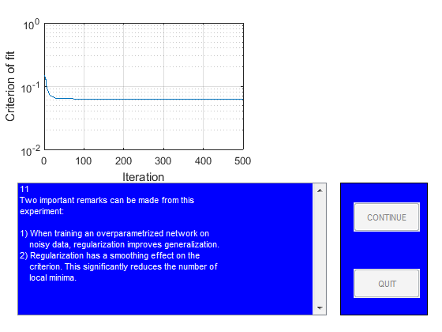

close all
StopDemo=0;
figure
guihand=gcf;
for k=1:1,
[guihand,edmulti,contbut,quitbut]=pmnshow;
set(guihand,'Name','Demonstration of regularization');
s0='1';
s1='In this demo it is shown how regularization by simple';
s2='weight decay might be of help when dealing with';
s3='overparametrization in neural networks.';
s4=[];
s5='The problem, which will be the subject of our';
s6='investigation, is to use a neural network for fitting';
s7='the underlying sine wave from the points marked';
s8='''training data.''';
smat=str2mat(s0,s1,s2,s3,s4,s5,s6,s7,s8);
load('dataSetofSpam.mat');
PHI1=trainData;
Y1=trainlabel;
PHI2=testData;
Y2=testlabel;
PHI1=PHI1';
PHI2=PHI2';
Y1=Y1';
Y2=Y2';
sub1=subplot('position',[0.1 0.55 0.38 0.38]);
plot(PHI1,Y1,'+');
set(gca,'Xlim',[min(PHI1(:)) max(PHI1(:))]);
title('Training data');
sub2=subplot('position',[0.57 0.55 0.38 0.38]);
plot(PHI2,Y2,'m+')
set(gca,'Xlim',[min(PHI2(:)) max(PHI2(:))]);
title('Test data');
drawnow
if StopDemo==1, close all, break; end
s0='2';
s1='Let''s begin by training a network with 15';
s2='hidden ''tanh'' units and one linear output unit';
s3='without using regularization.';
smat=str2mat(s0,s1,s2,s3);
NetDef = ['HHHHHHHHHHHHHHHHHHHH'
'L-------------------'];
W1 = rand(20,11);
W2 = rand(1,21);
delete(sub1);
delete(sub2);
sub1=subplot('position',[0.1 0.55 0.45 0.38]);
pmnshow(smat,guihand,edmulti,contbut,quitbut);
if StopDemo==1, close all, break; end
s0='3';
s1=[];
s2=' >> Training process in action!! <<';
s3=[];
s4=[];
s5='We run up to 500 iterations so you may have to';
s6='wait for a while!';
smat=str2mat(s0,s1,s2,s3,s4,s5,s6);
set(edmulti,'String',smat);
drawnow
trparms = settrain;
trparms = settrain(trparms,'maxiter',500);
[W1,W2,NSSEvec,iter,lambda2]=marq(NetDef,W1,W2,PHI1,Y1,trparms);
delete(gca);
subplot('position',[0.1 0.55 0.45 0.38]);
semilogy(NSSEvec);
xlabel('Iteration');
ylabel('Criterion of fit');
grid
s0='4';
s1='Next we compute training error, test error,';
s2='FPE estimate, and LOO estimate to get an idea';
s3='of how well the network fits the curve.';
smat=str2mat(s0,s1,s2,s3);
pmnshow(smat,guihand,edmulti,contbut,quitbut);
if StopDemo==1, close all, break; end
[Yhat,E,NSSE_tr] = nneval(NetDef,W1,W2,PHI1,Y1,1);
[Yhat,E,NSSE_te] = nneval(NetDef,W1,W2,PHI2,Y2,1);
FPE = fpe(NetDef,W1,W2,PHI1,Y1,trparms);
trparms2 = settrain(trparms,'maxiter',0);
ELOO= loo(NetDef,W1,W2,PHI1,Y1,trparms2);
s0='5';
s1=['Training error: ' num2str(NSSE_tr)];
s2=['Test Error: ' num2str(NSSE_te)];
s3=['FPE estimate: ' num2str(FPE)];
s4=['LOO estimate: ' num2str(ELOO)];
smat=str2mat(s0,s1,s2,s3,s4);
pmnshow(smat,guihand,edmulti,contbut,quitbut);
if StopDemo==1, close all, break; end
s0='6';
s1='This result is typical for networks having too many';
s2='weights. The superflous weights will capture';
s3='some of the noise on the training set, leading to';
s4='a poor generalization ability. This phenomenon is';
s5='usually referred to as ''overfitting''';
s6=[];
s7='Let''s try to train with a small weight decay (0.02)';
s8='and see what happens.';
smat=str2mat(s0,s1,s2,s3,s4,s5,s6,s7,s8);
pmnshow(smat,guihand,edmulti,contbut,quitbut);
if StopDemo==1, close all, break; end
s0='7';
s1=[];
s2=' >> Training process in action!! <<';
s3=[];
s4=[];
s5='We run up to 500 iterations so you may have to';
s6='wait for a while!';
smat=str2mat(s0,s1,s2,s3,s4,s5,s6);
set(edmulti,'String',smat);
drawnow
trparms = settrain(trparms,'D',0.02);
[W1,W2,NSSEvec,iter,lambda2]=marq(NetDef,W1,W2,PHI1,Y1,trparms);
delete(gca);
subplot('position',[0.1 0.55 0.45 0.38]);
semilogy(NSSEvec);
xlabel('Iteration');
ylabel('Criterion of fit');
grid
[Yhat,E,NSSE_tr2] = nneval(NetDef,W1,W2,PHI1,Y1,1);
[Yhat,E,NSSE_te2] = nneval(NetDef,W1,W2,PHI2,Y2,1);
trparms2 = settrain(trparms,'maxiter',0);
s0='8';
s1=' No regularization Regularization';
s2=['Training error: ' num2str(NSSE_tr) ' ' num2str(NSSE_tr2) ];
s3=['Test Error: ' num2str(NSSE_te) ' ' num2str(NSSE_te2)];
s6=[];
s7='It looks as if the weight decay actually improved';
s8='generalization.';
smat=str2mat(s0,s1,s2,s3,s4,s5,s6,s7,s8);
pmnshow(smat,guihand,edmulti,contbut,quitbut);
if StopDemo==1, close all, break; end
s0='9';
s1='To really proof the effect of regularization, we';
s2='redo the experiment for 50 different values of the';
s3='weight decay parameter. Also we train the network';
s4='7 times for each weight decay, using different initial';
s5='weights in order to reduce the influence from local';
s6='minima.';
smat=str2mat(s0,s1,s2,s3,s4,s5,s6);
pmnshow(smat,guihand,edmulti,contbut,quitbut);
if StopDemo==1, close all, break; end
s0='11';
s1='Two important remarks can be made from this';
s2='experiment:';
s25=[];
s3='1) When training an overparametrized network on';
s4=' noisy data, regularization improves generalization.';
s5='2) Regularization has a smoothing effect on the';
s6=' criterion. This significantly reduces the number of';
s7=' local minima.';
smat=str2mat(s0,s1,s2,s25,s3,s4,s5,s6,s7);
set(edmulti,'String',smat);
drawnow
TestatingData=PHI2;
save('TestatingData.mat','TestatingData');
save('modelEvaluation.mat','NetDef','PHI1','PHI2','W1','W2','Y1','Y2');
end
Network training started at 15.15.22
iteration # 1 W = 4.027e+00iteration # 2 W = 3.055e+00iteration # 3 W = 2.237e-01iteration # 4 W = 7.857e-02iteration # 5 W = 7.733e-02iteration # 6 W = 7.702e-02iteration # 7 W = 7.677e-02iteration # 8 W = 7.663e-02iteration # 9 W = 7.651e-02iteration # 10 W = 7.648e-02iteration # 11 W = 7.642e-02iteration # 12 W = 7.634e-02iteration # 13 W = 7.627e-02iteration # 14 W = 7.616e-02iteration # 15 W = 7.606e-02iteration # 16 W = 7.578e-02iteration # 17 W = 7.570e-02iteration # 18 W = 7.541e-02iteration # 19 W = 7.464e-02iteration # 20 W = 7.446e-02iteration # 21 W = 7.424e-02iteration # 22 W = 7.399e-02iteration # 23 W = 7.371e-02iteration # 24 W = 7.338e-02iteration # 25 W = 7.301e-02iteration # 26 W = 7.259e-02iteration # 27 W = 7.214e-02iteration # 28 W = 7.167e-02iteration # 29 W = 7.119e-02iteration # 30 W = 7.116e-02iteration # 31 W = 6.988e-02iteration # 32 W = 6.924e-02iteration # 33 W = 6.917e-02iteration # 34 W = 6.908e-02iteration # 35 W = 6.892e-02iteration # 36 W = 6.866e-02iteration # 37 W = 6.826e-02iteration # 38 W = 6.781e-02iteration # 39 W = 6.767e-02iteration # 40 W = 6.763e-02iteration # 41 W = 6.756e-02iteration # 42 W = 6.750e-02iteration # 43 W = 6.739e-02iteration # 44 W = 6.721e-02iteration # 45 W = 6.698e-02iteration # 46 W = 6.697e-02iteration # 47 W = 6.694e-02iteration # 48 W = 6.691e-02iteration # 49 W = 6.687e-02iteration # 50 W = 6.679e-02iteration # 51 W = 6.673e-02iteration # 52 W = 6.661e-02iteration # 53 W = 6.650e-02iteration # 54 W = 6.641e-02iteration # 55 W = 6.638e-02iteration # 56 W = 6.632e-02iteration # 57 W = 6.631e-02iteration # 58 W = 6.625e-02iteration # 59 W = 6.620e-02iteration # 60 W = 6.613e-02iteration # 61 W = 6.610e-02iteration # 62 W = 6.603e-02iteration # 63 W = 6.594e-02iteration # 64 W = 6.586e-02iteration # 65 W = 6.579e-02iteration # 66 W = 6.575e-02iteration # 67 W = 6.569e-02iteration # 68 W = 6.559e-02iteration # 69 W = 6.555e-02iteration # 70 W = 6.548e-02iteration # 71 W = 6.543e-02iteration # 72 W = 6.537e-02iteration # 73 W = 6.526e-02iteration # 74 W = 6.508e-02iteration # 75 W = 6.499e-02iteration # 76 W = 6.474e-02iteration # 77 W = 6.461e-02iteration # 78 W = 6.446e-02iteration # 79 W = 6.418e-02iteration # 80 W = 6.415e-02iteration # 81 W = 6.411e-02iteration # 82 W = 6.407e-02iteration # 83 W = 6.399e-02iteration # 84 W = 6.385e-02iteration # 85 W = 6.361e-02iteration # 86 W = 6.313e-02iteration # 87 W = 6.308e-02iteration # 88 W = 6.299e-02iteration # 89 W = 6.289e-02iteration # 90 W = 6.271e-02iteration # 91 W = 6.256e-02iteration # 92 W = 6.216e-02iteration # 93 W = 6.202e-02iteration # 94 W = 6.166e-02iteration # 95 W = 6.148e-02iteration # 96 W = 6.113e-02iteration # 97 W = 6.087e-02iteration # 98 W = 6.055e-02iteration # 99 W = 6.029e-02iteration # 100 W = 6.003e-02iteration # 101 W = 5.980e-02iteration # 102 W = 5.959e-02iteration # 103 W = 5.940e-02iteration # 104 W = 5.922e-02iteration # 105 W = 5.907e-02iteration # 106 W = 5.894e-02iteration # 107 W = 5.882e-02iteration # 108 W = 5.872e-02iteration # 109 W = 5.863e-02iteration # 110 W = 5.854e-02iteration # 111 W = 5.846e-02iteration # 112 W = 5.838e-02iteration # 113 W = 5.831e-02iteration # 114 W = 5.824e-02iteration # 115 W = 5.818e-02iteration # 116 W = 5.813e-02iteration # 117 W = 5.807e-02iteration # 118 W = 5.802e-02iteration # 119 W = 5.797e-02iteration # 120 W = 5.792e-02iteration # 121 W = 5.787e-02iteration # 122 W = 5.782e-02iteration # 123 W = 5.778e-02iteration # 124 W = 5.773e-02iteration # 125 W = 5.768e-02iteration # 126 W = 5.764e-02iteration # 127 W = 5.760e-02iteration # 128 W = 5.756e-02iteration # 129 W = 5.752e-02iteration # 130 W = 5.749e-02iteration # 131 W = 5.745e-02iteration # 132 W = 5.742e-02iteration # 133 W = 5.738e-02iteration # 134 W = 5.735e-02iteration # 135 W = 5.731e-02iteration # 136 W = 5.728e-02iteration # 137 W = 5.724e-02iteration # 138 W = 5.724e-02iteration # 139 W = 5.714e-02iteration # 140 W = 5.711e-02iteration # 141 W = 5.703e-02iteration # 142 W = 5.695e-02iteration # 143 W = 5.687e-02iteration # 144 W = 5.680e-02iteration # 145 W = 5.673e-02iteration # 146 W = 5.666e-02iteration # 147 W = 5.664e-02iteration # 148 W = 5.657e-02iteration # 149 W = 5.652e-02iteration # 150 W = 5.644e-02iteration # 151 W = 5.639e-02iteration # 152 W = 5.632e-02iteration # 153 W = 5.623e-02iteration # 154 W = 5.619e-02iteration # 155 W = 5.613e-02iteration # 156 W = 5.607e-02iteration # 157 W = 5.599e-02iteration # 158 W = 5.582e-02iteration # 159 W = 5.580e-02iteration # 160 W = 5.576e-02iteration # 161 W = 5.570e-02iteration # 162 W = 5.562e-02iteration # 163 W = 5.557e-02iteration # 164 W = 5.547e-02iteration # 165 W = 5.544e-02iteration # 166 W = 5.540e-02iteration # 167 W = 5.535e-02iteration # 168 W = 5.530e-02iteration # 169 W = 5.526e-02iteration # 170 W = 5.521e-02iteration # 171 W = 5.517e-02iteration # 172 W = 5.513e-02iteration # 173 W = 5.509e-02iteration # 174 W = 5.504e-02iteration # 175 W = 5.500e-02iteration # 176 W = 5.496e-02iteration # 177 W = 5.493e-02iteration # 178 W = 5.481e-02iteration # 179 W = 5.468e-02iteration # 180 W = 5.456e-02iteration # 181 W = 5.447e-02iteration # 182 W = 5.438e-02iteration # 183 W = 5.430e-02iteration # 184 W = 5.423e-02iteration # 185 W = 5.416e-02iteration # 186 W = 5.409e-02iteration # 187 W = 5.407e-02iteration # 188 W = 5.391e-02iteration # 189 W = 5.382e-02iteration # 190 W = 5.373e-02iteration # 191 W = 5.364e-02iteration # 192 W = 5.356e-02iteration # 193 W = 5.350e-02iteration # 194 W = 5.345e-02iteration # 195 W = 5.344e-02iteration # 196 W = 5.340e-02iteration # 197 W = 5.340e-02iteration # 198 W = 5.337e-02iteration # 199 W = 5.336e-02iteration # 200 W = 5.336e-02iteration # 201 W = 5.335e-02iteration # 202 W = 5.335e-02iteration # 203 W = 5.333e-02iteration # 204 W = 5.332e-02iteration # 205 W = 5.332e-02iteration # 206 W = 5.332e-02iteration # 207 W = 5.331e-02iteration # 208 W = 5.331e-02iteration # 209 W = 5.330e-02iteration # 210 W = 5.330e-02iteration # 211 W = 5.329e-02iteration # 212 W = 5.329e-02iteration # 213 W = 5.328e-02iteration # 214 W = 5.328e-02iteration # 215 W = 5.328e-02iteration # 216 W = 5.328e-02iteration # 217 W = 5.326e-02iteration # 218 W = 5.326e-02iteration # 219 W = 5.325e-02iteration # 220 W = 5.325e-02iteration # 221 W = 5.324e-02iteration # 222 W = 5.323e-02iteration # 223 W = 5.322e-02iteration # 224 W = 5.321e-02iteration # 225 W = 5.320e-02iteration # 226 W = 5.319e-02iteration # 227 W = 5.318e-02iteration # 228 W = 5.318e-02iteration # 229 W = 5.317e-02iteration # 230 W = 5.316e-02iteration # 231 W = 5.316e-02iteration # 232 W = 5.313e-02iteration # 233 W = 5.313e-02iteration # 234 W = 5.311e-02iteration # 235 W = 5.309e-02iteration # 236 W = 5.307e-02iteration # 237 W = 5.306e-02iteration # 238 W = 5.305e-02iteration # 239 W = 5.301e-02iteration # 240 W = 5.299e-02iteration # 241 W = 5.296e-02iteration # 242 W = 5.293e-02iteration # 243 W = 5.288e-02iteration # 244 W = 5.280e-02iteration # 245 W = 5.271e-02iteration # 246 W = 5.268e-02iteration # 247 W = 5.265e-02iteration # 248 W = 5.260e-02iteration # 249 W = 5.253e-02iteration # 250 W = 5.251e-02iteration # 251 W = 5.244e-02iteration # 252 W = 5.239e-02iteration # 253 W = 5.234e-02iteration # 254 W = 5.229e-02iteration # 255 W = 5.221e-02iteration # 256 W = 5.210e-02iteration # 257 W = 5.207e-02iteration # 258 W = 5.200e-02iteration # 259 W = 5.200e-02iteration # 260 W = 5.195e-02iteration # 261 W = 5.194e-02iteration # 262 W = 5.193e-02iteration # 263 W = 5.192e-02iteration # 264 W = 5.191e-02iteration # 265 W = 5.189e-02iteration # 266 W = 5.187e-02iteration # 267 W = 5.185e-02iteration # 268 W = 5.183e-02iteration # 269 W = 5.181e-02iteration # 270 W = 5.178e-02iteration # 271 W = 5.175e-02iteration # 272 W = 5.172e-02iteration # 273 W = 5.169e-02iteration # 274 W = 5.166e-02iteration # 275 W = 5.160e-02iteration # 276 W = 5.156e-02iteration # 277 W = 5.154e-02iteration # 278 W = 5.154e-02iteration # 279 W = 5.149e-02iteration # 280 W = 5.148e-02iteration # 281 W = 5.144e-02iteration # 282 W = 5.142e-02iteration # 283 W = 5.138e-02iteration # 284 W = 5.133e-02iteration # 285 W = 5.123e-02iteration # 286 W = 5.116e-02iteration # 287 W = 5.109e-02iteration # 288 W = 5.107e-02iteration # 289 W = 5.101e-02iteration # 290 W = 5.100e-02iteration # 291 W = 5.098e-02iteration # 292 W = 5.096e-02iteration # 293 W = 5.094e-02iteration # 294 W = 5.093e-02iteration # 295 W = 5.092e-02iteration # 296 W = 5.086e-02iteration # 297 W = 5.085e-02iteration # 298 W = 5.084e-02iteration # 299 W = 5.083e-02iteration # 300 W = 5.082e-02iteration # 301 W = 5.082e-02iteration # 302 W = 5.081e-02iteration # 303 W = 5.080e-02iteration # 304 W = 5.078e-02iteration # 305 W = 5.077e-02iteration # 306 W = 5.077e-02iteration # 307 W = 5.076e-02iteration # 308 W = 5.076e-02iteration # 309 W = 5.075e-02iteration # 310 W = 5.075e-02iteration # 311 W = 5.074e-02iteration # 312 W = 5.074e-02iteration # 313 W = 5.073e-02iteration # 314 W = 5.072e-02iteration # 315 W = 5.072e-02iteration # 316 W = 5.071e-02iteration # 317 W = 5.071e-02iteration # 318 W = 5.070e-02iteration # 319 W = 5.068e-02iteration # 320 W = 5.067e-02iteration # 321 W = 5.066e-02iteration # 322 W = 5.065e-02iteration # 323 W = 5.064e-02iteration # 324 W = 5.063e-02iteration # 325 W = 5.062e-02iteration # 326 W = 5.061e-02iteration # 327 W = 5.060e-02iteration # 328 W = 5.059e-02iteration # 329 W = 5.058e-02iteration # 330 W = 5.058e-02iteration # 331 W = 5.055e-02iteration # 332 W = 5.054e-02iteration # 333 W = 5.052e-02iteration # 334 W = 5.050e-02iteration # 335 W = 5.048e-02iteration # 336 W = 5.048e-02iteration # 337 W = 5.043e-02iteration # 338 W = 5.042e-02iteration # 339 W = 5.038e-02iteration # 340 W = 5.035e-02iteration # 341 W = 5.032e-02iteration # 342 W = 5.029e-02iteration # 343 W = 5.027e-02iteration # 344 W = 5.025e-02iteration # 345 W = 5.023e-02iteration # 346 W = 5.023e-02iteration # 347 W = 5.023e-02iteration # 348 W = 5.021e-02iteration # 349 W = 5.021e-02iteration # 350 W = 5.020e-02iteration # 351 W = 5.020e-02iteration # 352 W = 5.020e-02iteration # 353 W = 5.019e-02iteration # 354 W = 5.019e-02iteration # 355 W = 5.019e-02iteration # 356 W = 5.019e-02iteration # 357 W = 5.019e-02iteration # 358 W = 5.018e-02iteration # 359 W = 5.018e-02iteration # 360 W = 5.018e-02iteration # 361 W = 5.018e-02iteration # 362 W = 5.017e-02iteration # 363 W = 5.017e-02iteration # 364 W = 5.017e-02iteration # 365 W = 5.016e-02iteration # 366 W = 5.016e-02iteration # 367 W = 5.016e-02iteration # 368 W = 5.015e-02iteration # 369 W = 5.015e-02iteration # 370 W = 5.015e-02iteration # 371 W = 5.013e-02iteration # 372 W = 5.012e-02iteration # 373 W = 5.011e-02iteration # 374 W = 5.010e-02iteration # 375 W = 5.009e-02iteration # 376 W = 5.008e-02iteration # 377 W = 5.008e-02iteration # 378 W = 5.006e-02iteration # 379 W = 5.005e-02iteration # 380 W = 5.004e-02iteration # 381 W = 5.002e-02iteration # 382 W = 5.001e-02iteration # 383 W = 5.000e-02iteration # 384 W = 4.999e-02iteration # 385 W = 4.998e-02iteration # 386 W = 4.997e-02iteration # 387 W = 4.997e-02iteration # 388 W = 4.993e-02iteration # 389 W = 4.992e-02iteration # 390 W = 4.990e-02iteration # 391 W = 4.988e-02iteration # 392 W = 4.985e-02iteration # 393 W = 4.983e-02iteration # 394 W = 4.981e-02iteration # 395 W = 4.978e-02iteration # 396 W = 4.976e-02iteration # 397 W = 4.973e-02iteration # 398 W = 4.972e-02iteration # 399 W = 4.968e-02iteration # 400 W = 4.967e-02iteration # 401 W = 4.965e-02iteration # 402 W = 4.964e-02iteration # 403 W = 4.962e-02iteration # 404 W = 4.961e-02iteration # 405 W = 4.959e-02iteration # 406 W = 4.956e-02iteration # 407 W = 4.954e-02iteration # 408 W = 4.951e-02iteration # 409 W = 4.948e-02iteration # 410 W = 4.948e-02iteration # 411 W = 4.946e-02iteration # 412 W = 4.946e-02iteration # 413 W = 4.946e-02iteration # 414 W = 4.945e-02iteration # 415 W = 4.945e-02iteration # 416 W = 4.945e-02iteration # 417 W = 4.944e-02iteration # 418 W = 4.944e-02iteration # 419 W = 4.944e-02iteration # 420 W = 4.944e-02iteration # 421 W = 4.943e-02iteration # 422 W = 4.943e-02iteration # 423 W = 4.942e-02iteration # 424 W = 4.942e-02iteration # 425 W = 4.941e-02iteration # 426 W = 4.940e-02iteration # 427 W = 4.939e-02iteration # 428 W = 4.938e-02iteration # 429 W = 4.937e-02iteration # 430 W = 4.936e-02iteration # 431 W = 4.935e-02iteration # 432 W = 4.934e-02iteration # 433 W = 4.933e-02iteration # 434 W = 4.932e-02iteration # 435 W = 4.931e-02iteration # 436 W = 4.930e-02iteration # 437 W = 4.929e-02iteration # 438 W = 4.928e-02iteration # 439 W = 4.927e-02iteration # 440 W = 4.926e-02iteration # 441 W = 4.925e-02iteration # 442 W = 4.923e-02iteration # 443 W = 4.922e-02iteration # 444 W = 4.921e-02iteration # 445 W = 4.920e-02iteration # 446 W = 4.918e-02iteration # 447 W = 4.917e-02iteration # 448 W = 4.916e-02iteration # 449 W = 4.915e-02iteration # 450 W = 4.914e-02iteration # 451 W = 4.913e-02iteration # 452 W = 4.912e-02iteration # 453 W = 4.911e-02iteration # 454 W = 4.910e-02iteration # 455 W = 4.909e-02iteration # 456 W = 4.908e-02iteration # 457 W = 4.907e-02iteration # 458 W = 4.906e-02iteration # 459 W = 4.905e-02iteration # 460 W = 4.904e-02iteration # 461 W = 4.902e-02iteration # 462 W = 4.901e-02iteration # 463 W = 4.899e-02iteration # 464 W = 4.897e-02iteration # 465 W = 4.896e-02iteration # 466 W = 4.894e-02iteration # 467 W = 4.893e-02iteration # 468 W = 4.892e-02iteration # 469 W = 4.891e-02iteration # 470 W = 4.891e-02iteration # 471 W = 4.890e-02iteration # 472 W = 4.890e-02iteration # 473 W = 4.890e-02iteration # 474 W = 4.890e-02iteration # 475 W = 4.889e-02iteration # 476 W = 4.889e-02iteration # 477 W = 4.889e-02iteration # 478 W = 4.889e-02iteration # 479 W = 4.889e-02iteration # 480 W = 4.889e-02iteration # 481 W = 4.889e-02iteration # 482 W = 4.889e-02iteration # 483 W = 4.889e-02iteration # 484 W = 4.889e-02iteration # 485 W = 4.889e-02iteration # 486 W = 4.889e-02iteration # 487 W = 4.889e-02iteration # 488 W = 4.889e-02iteration # 489 W = 4.888e-02iteration # 490 W = 4.888e-02iteration # 491 W = 4.888e-02iteration # 492 W = 4.888e-02iteration # 493 W = 4.888e-02iteration # 494 W = 4.888e-02iteration # 495 W = 4.888e-02iteration # 496 W = 4.888e-02iteration # 497 W = 4.888e-02iteration # 498 W = 4.888e-02iteration # 499 W = 4.888e-02iteration # 500 W = 4.888e-02
Network training ended at 15.15.48
Network training started at 15.15.59
iteration # 1 W = 1.473e-01iteration # 2 W = 1.402e-01iteration # 3 W = 1.288e-01iteration # 4 W = 1.277e-01iteration # 5 W = 1.048e-01iteration # 6 W = 9.945e-02iteration # 7 W = 9.333e-02iteration # 8 W = 8.789e-02iteration # 9 W = 8.471e-02iteration # 10 W = 8.382e-02iteration # 11 W = 7.937e-02iteration # 12 W = 7.777e-02iteration # 13 W = 7.508e-02iteration # 14 W = 7.267e-02iteration # 15 W = 7.239e-02iteration # 16 W = 7.111e-02iteration # 17 W = 7.005e-02iteration # 18 W = 6.986e-02iteration # 19 W = 6.912e-02iteration # 20 W = 6.822e-02iteration # 21 W = 6.795e-02iteration # 22 W = 6.767e-02iteration # 23 W = 6.750e-02iteration # 24 W = 6.685e-02iteration # 25 W = 6.646e-02iteration # 26 W = 6.610e-02iteration # 27 W = 6.565e-02iteration # 28 W = 6.545e-02iteration # 29 W = 6.465e-02iteration # 30 W = 6.462e-02iteration # 31 W = 6.456e-02iteration # 32 W = 6.455e-02iteration # 33 W = 6.452e-02iteration # 34 W = 6.447e-02iteration # 35 W = 6.439e-02iteration # 36 W = 6.431e-02iteration # 37 W = 6.423e-02iteration # 38 W = 6.415e-02iteration # 39 W = 6.408e-02iteration # 40 W = 6.399e-02iteration # 41 W = 6.393e-02iteration # 42 W = 6.387e-02iteration # 43 W = 6.385e-02iteration # 44 W = 6.382e-02iteration # 45 W = 6.378e-02iteration # 46 W = 6.371e-02iteration # 47 W = 6.368e-02iteration # 48 W = 6.366e-02iteration # 49 W = 6.361e-02iteration # 50 W = 6.361e-02iteration # 51 W = 6.359e-02iteration # 52 W = 6.358e-02iteration # 53 W = 6.356e-02iteration # 54 W = 6.352e-02iteration # 55 W = 6.350e-02iteration # 56 W = 6.344e-02iteration # 57 W = 6.342e-02iteration # 58 W = 6.340e-02iteration # 59 W = 6.338e-02iteration # 60 W = 6.337e-02iteration # 61 W = 6.336e-02iteration # 62 W = 6.334e-02iteration # 63 W = 6.332e-02iteration # 64 W = 6.326e-02iteration # 65 W = 6.324e-02iteration # 66 W = 6.324e-02iteration # 67 W = 6.320e-02iteration # 68 W = 6.320e-02iteration # 69 W = 6.319e-02iteration # 70 W = 6.318e-02iteration # 71 W = 6.317e-02iteration # 72 W = 6.316e-02iteration # 73 W = 6.314e-02iteration # 74 W = 6.310e-02iteration # 75 W = 6.308e-02iteration # 76 W = 6.306e-02iteration # 77 W = 6.305e-02iteration # 78 W = 6.304e-02iteration # 79 W = 6.303e-02iteration # 80 W = 6.302e-02iteration # 81 W = 6.302e-02iteration # 82 W = 6.300e-02iteration # 83 W = 6.297e-02iteration # 84 W = 6.297e-02iteration # 85 W = 6.296e-02iteration # 86 W = 6.296e-02iteration # 87 W = 6.296e-02iteration # 88 W = 6.295e-02iteration # 89 W = 6.294e-02iteration # 90 W = 6.294e-02iteration # 91 W = 6.292e-02iteration # 92 W = 6.292e-02iteration # 93 W = 6.289e-02iteration # 94 W = 6.289e-02iteration # 95 W = 6.289e-02iteration # 96 W = 6.289e-02iteration # 97 W = 6.289e-02iteration # 98 W = 6.288e-02iteration # 99 W = 6.288e-02iteration # 100 W = 6.286e-02iteration # 101 W = 6.285e-02iteration # 102 W = 6.284e-02iteration # 103 W = 6.283e-02iteration # 104 W = 6.283e-02iteration # 105 W = 6.282e-02iteration # 106 W = 6.282e-02iteration # 107 W = 6.281e-02iteration # 108 W = 6.281e-02iteration # 109 W = 6.280e-02iteration # 110 W = 6.280e-02iteration # 111 W = 6.279e-02iteration # 112 W = 6.278e-02iteration # 113 W = 6.278e-02iteration # 114 W = 6.277e-02iteration # 115 W = 6.277e-02iteration # 116 W = 6.277e-02iteration # 117 W = 6.276e-02iteration # 118 W = 6.276e-02iteration # 119 W = 6.275e-02iteration # 120 W = 6.275e-02iteration # 121 W = 6.275e-02iteration # 122 W = 6.274e-02iteration # 123 W = 6.274e-02iteration # 124 W = 6.274e-02iteration # 125 W = 6.273e-02iteration # 126 W = 6.272e-02iteration # 127 W = 6.272e-02iteration # 128 W = 6.272e-02iteration # 129 W = 6.272e-02iteration # 130 W = 6.271e-02iteration # 131 W = 6.271e-02iteration # 132 W = 6.271e-02iteration # 133 W = 6.270e-02iteration # 134 W = 6.270e-02iteration # 135 W = 6.270e-02iteration # 136 W = 6.269e-02iteration # 137 W = 6.269e-02iteration # 138 W = 6.269e-02iteration # 139 W = 6.269e-02iteration # 140 W = 6.269e-02iteration # 141 W = 6.269e-02iteration # 142 W = 6.269e-02iteration # 143 W = 6.269e-02iteration # 144 W = 6.268e-02iteration # 145 W = 6.268e-02iteration # 146 W = 6.267e-02iteration # 147 W = 6.267e-02iteration # 148 W = 6.266e-02iteration # 149 W = 6.266e-02iteration # 150 W = 6.266e-02iteration # 151 W = 6.266e-02iteration # 152 W = 6.266e-02iteration # 153 W = 6.265e-02iteration # 154 W = 6.265e-02iteration # 155 W = 6.264e-02iteration # 156 W = 6.264e-02iteration # 157 W = 6.264e-02iteration # 158 W = 6.264e-02iteration # 159 W = 6.264e-02iteration # 160 W = 6.264e-02iteration # 161 W = 6.264e-02iteration # 162 W = 6.264e-02iteration # 163 W = 6.263e-02iteration # 164 W = 6.263e-02iteration # 165 W = 6.263e-02iteration # 166 W = 6.263e-02iteration # 167 W = 6.263e-02iteration # 168 W = 6.262e-02iteration # 169 W = 6.262e-02iteration # 170 W = 6.262e-02iteration # 171 W = 6.262e-02iteration # 172 W = 6.262e-02iteration # 173 W = 6.262e-02iteration # 174 W = 6.262e-02iteration # 175 W = 6.262e-02iteration # 176 W = 6.262e-02iteration # 177 W = 6.261e-02iteration # 178 W = 6.261e-02iteration # 179 W = 6.261e-02iteration # 180 W = 6.261e-02iteration # 181 W = 6.261e-02iteration # 182 W = 6.261e-02iteration # 183 W = 6.261e-02iteration # 184 W = 6.261e-02iteration # 185 W = 6.261e-02iteration # 186 W = 6.261e-02iteration # 187 W = 6.261e-02iteration # 188 W = 6.260e-02iteration # 189 W = 6.260e-02iteration # 190 W = 6.260e-02iteration # 191 W = 6.260e-02iteration # 192 W = 6.260e-02iteration # 193 W = 6.260e-02iteration # 194 W = 6.260e-02iteration # 195 W = 6.260e-02iteration # 196 W = 6.260e-02iteration # 197 W = 6.260e-02iteration # 198 W = 6.259e-02iteration # 199 W = 6.259e-02iteration # 200 W = 6.259e-02iteration # 201 W = 6.259e-02iteration # 202 W = 6.259e-02iteration # 203 W = 6.259e-02iteration # 204 W = 6.259e-02iteration # 205 W = 6.259e-02iteration # 206 W = 6.259e-02iteration # 207 W = 6.259e-02iteration # 208 W = 6.259e-02iteration # 209 W = 6.259e-02iteration # 210 W = 6.259e-02iteration # 211 W = 6.259e-02iteration # 212 W = 6.259e-02iteration # 213 W = 6.259e-02iteration # 214 W = 6.259e-02iteration # 215 W = 6.259e-02iteration # 216 W = 6.259e-02iteration # 217 W = 6.259e-02iteration # 218 W = 6.259e-02iteration # 219 W = 6.259e-02iteration # 220 W = 6.258e-02iteration # 221 W = 6.258e-02iteration # 222 W = 6.258e-02iteration # 223 W = 6.258e-02iteration # 224 W = 6.258e-02iteration # 225 W = 6.258e-02iteration # 226 W = 6.258e-02iteration # 227 W = 6.258e-02iteration # 228 W = 6.258e-02iteration # 229 W = 6.258e-02iteration # 230 W = 6.258e-02iteration # 231 W = 6.258e-02iteration # 232 W = 6.258e-02iteration # 233 W = 6.258e-02iteration # 234 W = 6.258e-02iteration # 235 W = 6.258e-02iteration # 236 W = 6.258e-02iteration # 237 W = 6.258e-02iteration # 238 W = 6.258e-02iteration # 239 W = 6.258e-02iteration # 240 W = 6.258e-02iteration # 241 W = 6.258e-02iteration # 242 W = 6.258e-02iteration # 243 W = 6.258e-02iteration # 244 W = 6.258e-02iteration # 245 W = 6.258e-02iteration # 246 W = 6.258e-02iteration # 247 W = 6.258e-02iteration # 248 W = 6.258e-02iteration # 249 W = 6.258e-02iteration # 250 W = 6.258e-02iteration # 251 W = 6.258e-02iteration # 252 W = 6.258e-02iteration # 253 W = 6.258e-02iteration # 254 W = 6.258e-02iteration # 255 W = 6.258e-02iteration # 256 W = 6.258e-02iteration # 257 W = 6.258e-02iteration # 258 W = 6.258e-02iteration # 259 W = 6.257e-02iteration # 260 W = 6.257e-02iteration # 261 W = 6.257e-02iteration # 262 W = 6.257e-02iteration # 263 W = 6.257e-02iteration # 264 W = 6.257e-02iteration # 265 W = 6.257e-02iteration # 266 W = 6.257e-02iteration # 267 W = 6.257e-02iteration # 268 W = 6.257e-02iteration # 269 W = 6.257e-02iteration # 270 W = 6.257e-02iteration # 271 W = 6.257e-02iteration # 272 W = 6.257e-02iteration # 273 W = 6.257e-02iteration # 274 W = 6.257e-02iteration # 275 W = 6.257e-02iteration # 276 W = 6.257e-02iteration # 277 W = 6.257e-02iteration # 278 W = 6.257e-02iteration # 279 W = 6.257e-02iteration # 280 W = 6.257e-02iteration # 281 W = 6.257e-02iteration # 282 W = 6.257e-02iteration # 283 W = 6.257e-02iteration # 284 W = 6.257e-02iteration # 285 W = 6.257e-02iteration # 286 W = 6.257e-02iteration # 287 W = 6.257e-02iteration # 288 W = 6.257e-02iteration # 289 W = 6.257e-02iteration # 290 W = 6.257e-02iteration # 291 W = 6.257e-02iteration # 292 W = 6.257e-02iteration # 293 W = 6.257e-02iteration # 294 W = 6.257e-02iteration # 295 W = 6.257e-02iteration # 296 W = 6.257e-02iteration # 297 W = 6.257e-02iteration # 298 W = 6.257e-02iteration # 299 W = 6.257e-02iteration # 300 W = 6.257e-02iteration # 301 W = 6.257e-02iteration # 302 W = 6.257e-02iteration # 303 W = 6.257e-02iteration # 304 W = 6.257e-02iteration # 305 W = 6.257e-02iteration # 306 W = 6.257e-02iteration # 307 W = 6.257e-02iteration # 308 W = 6.257e-02iteration # 309 W = 6.257e-02iteration # 310 W = 6.257e-02iteration # 311 W = 6.257e-02iteration # 312 W = 6.257e-02iteration # 313 W = 6.257e-02iteration # 314 W = 6.257e-02iteration # 315 W = 6.257e-02iteration # 316 W = 6.257e-02iteration # 317 W = 6.257e-02iteration # 318 W = 6.257e-02iteration # 319 W = 6.257e-02iteration # 320 W = 6.257e-02iteration # 321 W = 6.257e-02iteration # 322 W = 6.257e-02iteration # 323 W = 6.257e-02iteration # 324 W = 6.257e-02iteration # 325 W = 6.257e-02iteration # 326 W = 6.257e-02iteration # 327 W = 6.257e-02iteration # 328 W = 6.257e-02iteration # 329 W = 6.257e-02iteration # 330 W = 6.257e-02iteration # 331 W = 6.257e-02iteration # 332 W = 6.257e-02iteration # 333 W = 6.257e-02iteration # 334 W = 6.257e-02iteration # 335 W = 6.257e-02iteration # 336 W = 6.257e-02iteration # 337 W = 6.257e-02iteration # 338 W = 6.257e-02iteration # 339 W = 6.257e-02iteration # 340 W = 6.257e-02iteration # 341 W = 6.257e-02iteration # 342 W = 6.257e-02iteration # 343 W = 6.257e-02iteration # 344 W = 6.257e-02iteration # 345 W = 6.257e-02iteration # 346 W = 6.257e-02iteration # 347 W = 6.257e-02iteration # 348 W = 6.257e-02iteration # 349 W = 6.257e-02iteration # 350 W = 6.257e-02iteration # 351 W = 6.257e-02iteration # 352 W = 6.257e-02iteration # 353 W = 6.257e-02iteration # 354 W = 6.257e-02iteration # 355 W = 6.257e-02iteration # 356 W = 6.257e-02iteration # 357 W = 6.257e-02iteration # 358 W = 6.257e-02iteration # 359 W = 6.257e-02iteration # 360 W = 6.257e-02iteration # 361 W = 6.257e-02iteration # 362 W = 6.257e-02iteration # 363 W = 6.257e-02iteration # 364 W = 6.257e-02iteration # 365 W = 6.257e-02iteration # 366 W = 6.257e-02iteration # 367 W = 6.257e-02iteration # 368 W = 6.257e-02iteration # 369 W = 6.257e-02iteration # 370 W = 6.257e-02iteration # 371 W = 6.257e-02iteration # 372 W = 6.257e-02iteration # 373 W = 6.257e-02iteration # 374 W = 6.257e-02iteration # 375 W = 6.257e-02iteration # 376 W = 6.257e-02iteration # 377 W = 6.257e-02iteration # 378 W = 6.257e-02iteration # 379 W = 6.257e-02iteration # 380 W = 6.257e-02iteration # 381 W = 6.257e-02iteration # 382 W = 6.257e-02iteration # 383 W = 6.257e-02iteration # 384 W = 6.257e-02iteration # 385 W = 6.257e-02iteration # 386 W = 6.257e-02iteration # 387 W = 6.257e-02iteration # 388 W = 6.257e-02iteration # 389 W = 6.257e-02iteration # 390 W = 6.257e-02iteration # 391 W = 6.257e-02iteration # 392 W = 6.257e-02iteration # 393 W = 6.257e-02iteration # 394 W = 6.257e-02iteration # 395 W = 6.257e-02iteration # 396 W = 6.257e-02iteration # 397 W = 6.257e-02iteration # 398 W = 6.257e-02iteration # 399 W = 6.257e-02iteration # 400 W = 6.257e-02iteration # 401 W = 6.257e-02iteration # 402 W = 6.257e-02iteration # 403 W = 6.257e-02iteration # 404 W = 6.257e-02iteration # 405 W = 6.257e-02iteration # 406 W = 6.257e-02iteration # 407 W = 6.257e-02iteration # 408 W = 6.257e-02iteration # 409 W = 6.257e-02iteration # 410 W = 6.257e-02iteration # 411 W = 6.257e-02iteration # 412 W = 6.257e-02iteration # 413 W = 6.257e-02iteration # 414 W = 6.257e-02iteration # 415 W = 6.257e-02iteration # 416 W = 6.257e-02iteration # 417 W = 6.257e-02iteration # 418 W = 6.257e-02iteration # 419 W = 6.257e-02iteration # 420 W = 6.257e-02iteration # 421 W = 6.257e-02iteration # 422 W = 6.257e-02iteration # 423 W = 6.257e-02iteration # 424 W = 6.257e-02iteration # 425 W = 6.257e-02iteration # 426 W = 6.257e-02iteration # 427 W = 6.257e-02iteration # 428 W = 6.257e-02iteration # 429 W = 6.257e-02iteration # 430 W = 6.257e-02iteration # 431 W = 6.257e-02iteration # 432 W = 6.257e-02iteration # 433 W = 6.257e-02iteration # 434 W = 6.257e-02iteration # 435 W = 6.257e-02iteration # 436 W = 6.257e-02iteration # 437 W = 6.257e-02iteration # 438 W = 6.257e-02iteration # 439 W = 6.257e-02iteration # 440 W = 6.257e-02iteration # 441 W = 6.257e-02iteration # 442 W = 6.257e-02iteration # 443 W = 6.257e-02iteration # 444 W = 6.257e-02iteration # 445 W = 6.257e-02iteration # 446 W = 6.257e-02iteration # 447 W = 6.257e-02iteration # 448 W = 6.257e-02iteration # 449 W = 6.257e-02iteration # 450 W = 6.257e-02iteration # 451 W = 6.257e-02iteration # 452 W = 6.257e-02iteration # 453 W = 6.257e-02iteration # 454 W = 6.257e-02iteration # 455 W = 6.257e-02iteration # 456 W = 6.257e-02iteration # 457 W = 6.257e-02iteration # 458 W = 6.257e-02iteration # 459 W = 6.257e-02iteration # 460 W = 6.257e-02iteration # 461 W = 6.257e-02iteration # 462 W = 6.257e-02iteration # 463 W = 6.257e-02iteration # 464 W = 6.257e-02iteration # 465 W = 6.257e-02iteration # 466 W = 6.257e-02iteration # 467 W = 6.257e-02iteration # 468 W = 6.257e-02iteration # 469 W = 6.257e-02iteration # 470 W = 6.257e-02iteration # 471 W = 6.257e-02iteration # 472 W = 6.257e-02iteration # 473 W = 6.257e-02iteration # 474 W = 6.257e-02iteration # 475 W = 6.257e-02iteration # 476 W = 6.257e-02iteration # 477 W = 6.257e-02iteration # 478 W = 6.257e-02iteration # 479 W = 6.257e-02iteration # 480 W = 6.257e-02iteration # 481 W = 6.257e-02iteration # 482 W = 6.257e-02iteration # 483 W = 6.257e-02iteration # 484 W = 6.257e-02iteration # 485 W = 6.257e-02iteration # 486 W = 6.257e-02iteration # 487 W = 6.257e-02iteration # 488 W = 6.257e-02iteration # 489 W = 6.257e-02iteration # 490 W = 6.257e-02iteration # 491 W = 6.257e-02iteration # 492 W = 6.257e-02iteration # 493 W = 6.257e-02iteration # 494 W = 6.257e-02iteration # 495 W = 6.257e-02iteration # 496 W = 6.257e-02iteration # 497 W = 6.257e-02iteration # 498 W = 6.257e-02iteration # 499 W = 6.257e-02iteration # 500 W = 6.257e-02
Network training ended at 15.16.26
